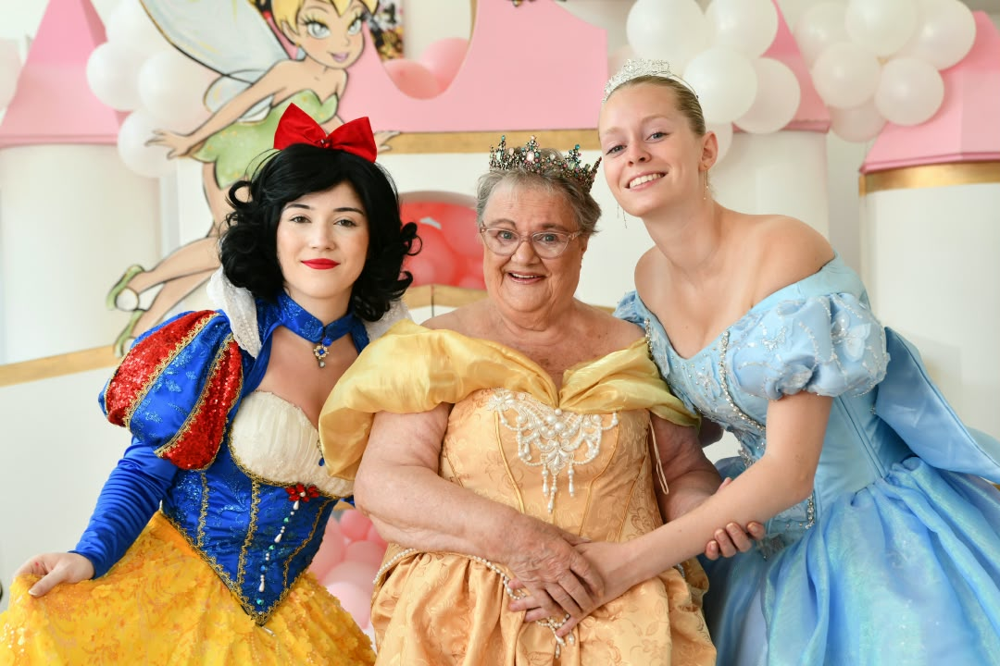
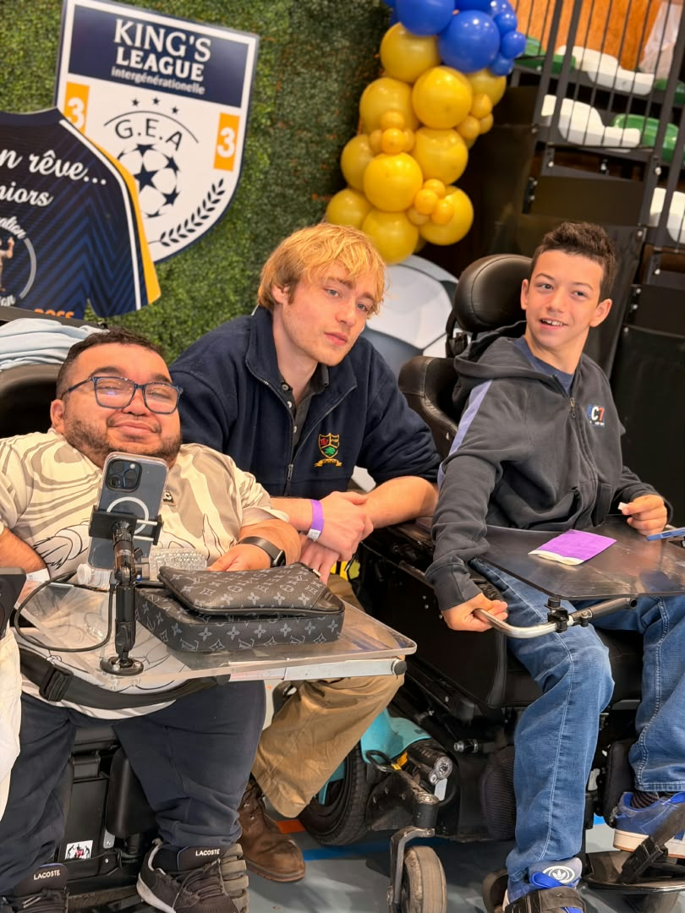

HUDERF
J'ai un rêve
Parce qu'un rêve n'a pas d'âge. Nous réalisons des rêves d'enfants hospitalisés à l'Hôpital Universitaire des Enfants Reine Fabiola. En 2027, le projet entrera dans sa quatrième année.
Le projet
Ensemble, nous créons du lien.
Génération en Action est une ASBL bruxelloise portée par des jeunes qui imaginent et développent des projets intergénérationnels.
Génération en Action est une ASBL bruxelloise portée par des jeunes qui imaginent et développent des projets intergénérationnels.
Notre objectif est simple : créer des rencontres qui n'auraient peut-être jamais eu lieu autrement.
Nous réunissons des jeunes, des seniors, des enfants hospitalisés, des enfants placés et différents publics autour d'activités, de projets solidaires, de sport, de culture et surtout de moments humains.
Parce qu'une génération a toujours quelque chose à transmettre à une autre.
Nos projets peuvent prendre des formes très différentes. Ils commencent toujours de la même manière : des jeunes ont une idée et décident de la transformer en action.
Parce qu'un rêve n'a pas d'âge. Nous réalisons des rêves d'enfants hospitalisés à l'Hôpital Universitaire des Enfants Reine Fabiola. En 2027, le projet entrera dans sa quatrième année.
Le projet
Les rêves ne prennent pas leur retraite. Première édition 2026 : 8 maisons de repos, plus de 26 rêves. En 2027, l'aventure continue avec une deuxième édition.
Le projet
Bouger ensemble, quel que soit son âge. Football, boxe, padel, yoga, Pilates, danse — et la Kings League intergénérationnelle, où la performance compte moins que l'équipe créée.
Le projet
L'activité est importante. Mais elle est surtout un prétexte pour créer quelque chose de beaucoup plus précieux : une rencontre.
Les activités
Rêves, matchs, murs peints, rencontres. La suite se vit aussi sur Instagram.


« Parce qu'entre 7 et 97 ans, il reste toujours quelque chose à partager. »
Toujours croire en ses rêves.